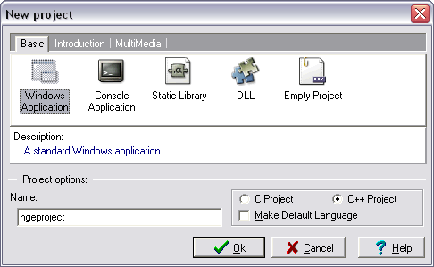
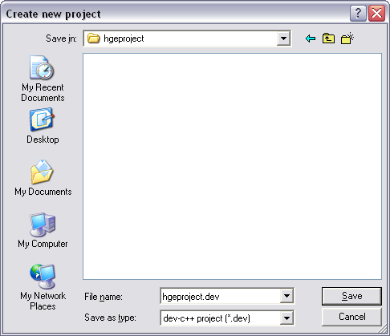
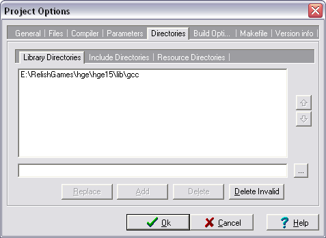
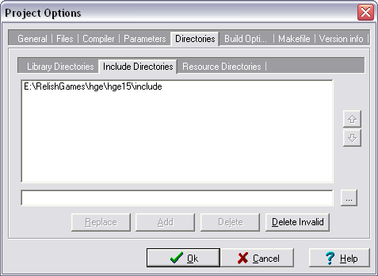
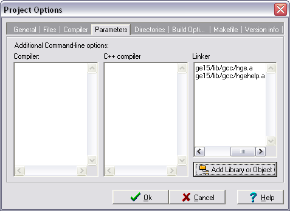

Dev C++ 5
1. Создание пустого проекта Win32 Application
Откройте зкладку File->New->Project...->Basic. Впишите название проекта и выберите иконку
Windows Application:

Нажмите Ok.
В следующем окне выберите или создайте директорию для проекта и нажмите Save:

2. Установка путей до библиотек и заголовков
Откройте закладку Project->Project Options->Directories и выберите под-закладку Library Directories.
Нажмите кнопку ..., пролистайте до HGE директории "lib\gcc" и нажмите Ok. Потом
нажмите Add:

Затем выберите под-закладку Include Directories и повторите операцию для HGE директории "include":

Не нажимайте сразу Ok.
3. Добавление библиотек в проект
В этом же диалоге выберите закладку Parameters, нажмите кнопку Add Library or Object,
пролистайте до файла "hge.a" и нажмите Open. Повторите теже действия для "hgehelp.a":

Теперь нажмите Ok.
4. Начинайте писать код!
Добавьте заголовок hge.h для доступа к функциям HGE. Смотрите секию
Примеры с простыми примерами кода.
|